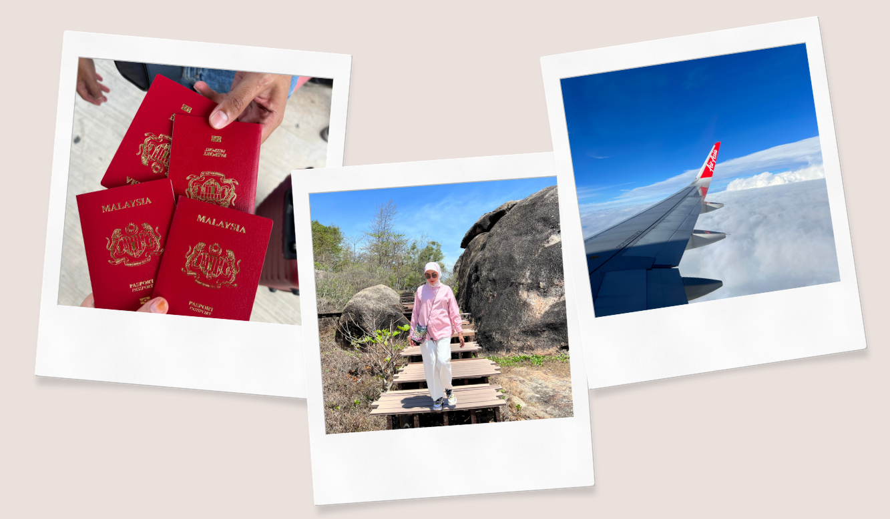
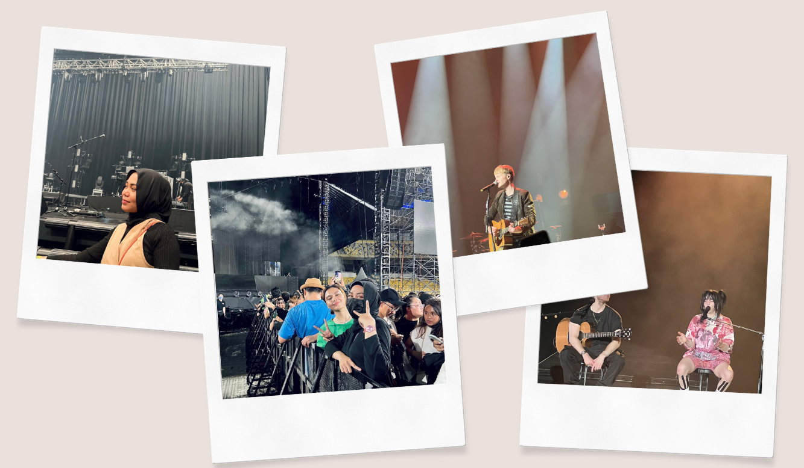
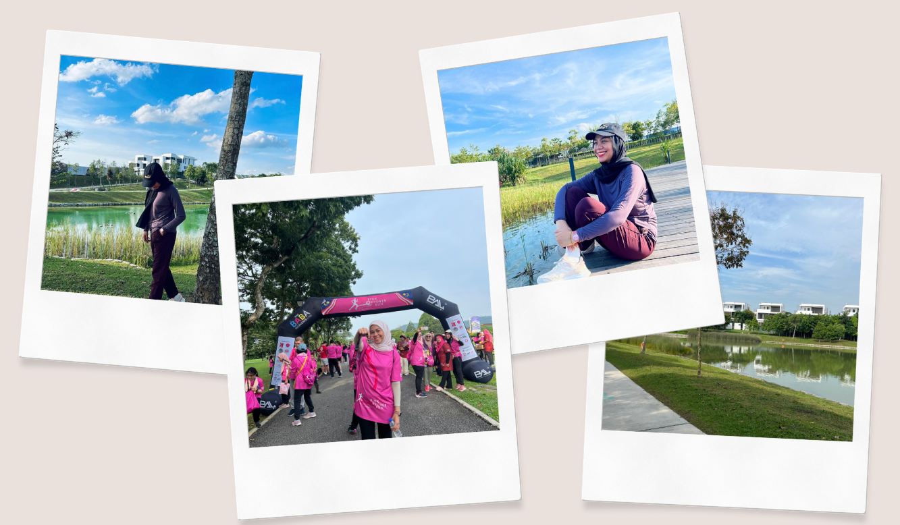

I love to travel because, for me, it is the best form of self-reward. Visiting new places allows me to experience different cultures, try unique local foods, and see life from another perspective. I truly enjoy every moment of it, whether it’s exploring new cities or just relaxing in a different environment. Travelling gives me a sense of freedom and joy, and I believe it’s the best way to escape from reality for a while and recharge both mentally and emotionally.

MUSIC & CONCERT
I love listening to music all the time. Whether I'm working, relaxing, or on the go, music is always with me. It helps me focus, lifts my mood, and gives me comfort. Whenever I get the chance, I love attending concerts to see my favourite artists perform live. Going to concerts is one of the ways I reward myself, It brings me so much happiness and creates unforgettable memories. It’s a special experience that makes me feel truly alive and grateful.


FITNESS & HEALTH
I’m into fitness and health, and I always try to maintain a balanced lifestyle. I follow a diet meal plan to help me stay fit and healthy. Every weekend, I make it a routine to go jogging at the park for some fresh air and exercise. If I don't get the chance to go out, I’ll run on my treadmill at home instead. From time to time, I also join fun run activities, which are a great way to stay active while enjoying the positive energy of the crowd.